Nossa missão e visâo:
Na MRG Arquitetura & Urbanismo
, nossa missão é transformar ideias em espaços inspiradores e funcionais que superem
as expectativas dos nossos clientes. Acreditamos que a arquitetura vai além da estética – ela deve
refletir a essência de cada projeto e promover um ambiente harmonioso e sustentável. Nossa visão é ser
reconhecida como uma referência em inovação e excelência no design arquitetônico.
Equipe de especialistas:
Composta por uma equipe apaixonada e altamente qualificada, a MRG
Arquitetura & Urbanismo reúne arquitetos,
designers e engenheiros com vasta experiência e criatividade. Cada membro da nossa equipe traz um
conjunto único de habilidades e perspectivas, permitindo-nos oferecer soluções personalizadas que
atendem às necessidades específicas de cada cliente e projeto.
Nosso Compromisso com a Sustentabilidade:
Estamos comprometidos com práticas de design sustentáveis que respeitam o meio ambiente e promovem a
eficiência energética. Utilizamos técnicas e materiais ecológicos para criar edifícios que não só são
esteticamente agradáveis, mas também contribuem para um futuro mais verde e sustentável.
Em cada
projeto, buscamos equilibrar inovação, funcionalidade e responsabilidade ambiental.